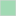

<!-- Hyper-text Markup Language and JavaScript for a simple Leaflet map,
created by Joseph Holler using the QGIS2WEB Plugin and data from OpenStreetMap and Resilience Academy -->
    <head>
        <meta charset="utf-8">
        <meta http-equiv="X-UA-Compatible" content="IE=edge">
        <meta name="viewport" content="initial-scale=1,user-scalable=no,maximum-scale=1,width=device-width">
        <meta name="mobile-web-app-capable" content="yes">
        <meta name="apple-mobile-web-app-capable" content="yes">
        <link rel="stylesheet" href="css/leaflet.css">
        <link rel="stylesheet" href="css/qgis2web.css"><link rel="stylesheet" href="css/fontawesome-all.min.css">
        <style>
        html, body, #map {
            width: 100%;
            height: 100%;
            padding: 0;
            margin: 0;
        }
        </style>
        <title>Pharmacies in Dar es Salaam</title>
    </head>
    <body>
        <div id="map">
        </div>
        <script src="js/qgis2web_expressions.js"></script>
        <script src="js/leaflet.js"></script>
        <script src="js/leaflet.rotatedMarker.js"></script>
        <script src="js/leaflet.pattern.js"></script>
        <script src="js/leaflet-hash.js"></script>
        <script src="js/Autolinker.min.js"></script>
        <script src="js/rbush.min.js"></script>
        <script src="js/labelgun.min.js"></script>
        <script src="js/labels.js"></script>
        <script src="data/PharmacyDensitybySubward_1.js"></script>
        <script src="data/Pharmacy_2.js"></script>
        <script>
        var map = L.map('map', {
            zoomControl:true, maxZoom:19, minZoom:6
        }).fitBounds([[-7.15425174310803,38.78695286810398],[-6.50820307806134,39.850989037503794]]);
        var hash = new L.Hash(map);
        map.attributionControl.setPrefix('<a href="https://gis4dev.github.io">gis4dev</a> | <a href="https://github.com/tomchadwin/qgis2web" target="_blank">qgis2web</a> &middot; <a href="https://leafletjs.com" title="A JS library for interactive maps">Leaflet</a> &middot; <a href="https://qgis.org" target="_blank">QGIS</a>');
        var bounds_group = new L.featureGroup([]);
        function setBounds() {
        }
        var layer_OSMStandard_0 = L.tileLayer('https://tile.openstreetmap.org/{z}/{x}/{y}.png', {
            opacity: 1.0,
            attribution: '<a href="https://www.openstreetmap.org/copyright">© OpenStreetMap contributors, CC-BY-SA</a>',
            minZoom: 6,
            maxZoom: 19,
            minNativeZoom: 0,
            maxNativeZoom: 19
        });
        layer_OSMStandard_0;
        map.addLayer(layer_OSMStandard_0);
        function pop_PharmacyDensitybySubward_1(feature, layer) {
            var popupContent = '<table>\
                    <tr>\
                        <td colspan="2">' + (feature.properties['pharm_dens'] !== null ? Autolinker.link(String(feature.properties['pharm_dens'])) : '') + '</td>\
                    </tr>\
                </table>';
            layer.bindPopup(popupContent, {maxHeight: 400});
        }

        function style_PharmacyDensitybySubward_1_0(feature) {
            if (feature.properties['pharm_dens'] >= 0.058000 && feature.properties['pharm_dens'] <= 1.798400 ) {
                return {
                pane: 'pane_PharmacyDensitybySubward_1',
                opacity: 1,
                color: 'rgba(212,212,212,0.757)',
                dashArray: '',
                lineCap: 'butt',
                lineJoin: 'miter',
                weight: 1, 
                fill: true,
                fillOpacity: 1,
                fillColor: 'rgba(255,255,204,0.757)',
                interactive: true,
            }
            }
            if (feature.properties['pharm_dens'] >= 1.798400 && feature.properties['pharm_dens'] <= 5.318800 ) {
                return {
                pane: 'pane_PharmacyDensitybySubward_1',
                opacity: 1,
                color: 'rgba(212,212,212,0.757)',
                dashArray: '',
                lineCap: 'butt',
                lineJoin: 'miter',
                weight: 1, 
                fill: true,
                fillOpacity: 1,
                fillColor: 'rgba(161,218,180,0.757)',
                interactive: true,
            }
            }
            if (feature.properties['pharm_dens'] >= 5.318800 && feature.properties['pharm_dens'] <= 11.281800 ) {
                return {
                pane: 'pane_PharmacyDensitybySubward_1',
                opacity: 1,
                color: 'rgba(212,212,212,0.757)',
                dashArray: '',
                lineCap: 'butt',
                lineJoin: 'miter',
                weight: 1, 
                fill: true,
                fillOpacity: 1,
                fillColor: 'rgba(65,182,196,0.757)',
                interactive: true,
            }
            }
            if (feature.properties['pharm_dens'] >= 11.281800 && feature.properties['pharm_dens'] <= 20.708000 ) {
                return {
                pane: 'pane_PharmacyDensitybySubward_1',
                opacity: 1,
                color: 'rgba(212,212,212,0.757)',
                dashArray: '',
                lineCap: 'butt',
                lineJoin: 'miter',
                weight: 1, 
                fill: true,
                fillOpacity: 1,
                fillColor: 'rgba(44,127,184,0.757)',
                interactive: true,
            }
            }
            if (feature.properties['pharm_dens'] >= 20.708000 && feature.properties['pharm_dens'] <= 74.476000 ) {
                return {
                pane: 'pane_PharmacyDensitybySubward_1',
                opacity: 1,
                color: 'rgba(212,212,212,0.757)',
                dashArray: '',
                lineCap: 'butt',
                lineJoin: 'miter',
                weight: 1, 
                fill: true,
                fillOpacity: 1,
                fillColor: 'rgba(37,52,148,0.757)',
                interactive: true,
            }
            }
        }
        map.createPane('pane_PharmacyDensitybySubward_1');
        map.getPane('pane_PharmacyDensitybySubward_1').style.zIndex = 401;
        map.getPane('pane_PharmacyDensitybySubward_1').style['mix-blend-mode'] = 'normal';
        var layer_PharmacyDensitybySubward_1 = new L.geoJson(json_PharmacyDensitybySubward_1, {
            attribution: '<a href="https://geonode.resilienceacademy.ac.tz/" target="_blank">Resilience Academy</a>',
            interactive: true,
            dataVar: 'json_PharmacyDensitybySubward_1',
            layerName: 'layer_PharmacyDensitybySubward_1',
            pane: 'pane_PharmacyDensitybySubward_1',
            onEachFeature: pop_PharmacyDensitybySubward_1,
            style: style_PharmacyDensitybySubward_1_0,
        });
        bounds_group.addLayer(layer_PharmacyDensitybySubward_1);
        map.addLayer(layer_PharmacyDensitybySubward_1);
        function pop_Pharmacy_2(feature, layer) {
            var popupContent = '<table>\
                    <tr>\
                        <td colspan="2">' + (feature.properties['FID'] !== null ? Autolinker.link(String(feature.properties['FID'])) : '') + '</td>\
                    </tr>\
                </table>';
            layer.bindPopup(popupContent, {maxHeight: 400});
        }

        function style_Pharmacy_2_0() {
            return {
                pane: 'pane_Pharmacy_2',
                radius: 3.0,
                opacity: 1,
                color: 'rgba(255,255,255,1.0)',
                dashArray: '',
                lineCap: 'butt',
                lineJoin: 'miter',
                weight: 1,
                fill: true,
                fillOpacity: 1,
                fillColor: 'rgba(31,120,180,0.6784313725490196)',
                interactive: false,
            }
        }
        map.createPane('pane_Pharmacy_2');
        map.getPane('pane_Pharmacy_2').style.zIndex = 402;
        map.getPane('pane_Pharmacy_2').style['mix-blend-mode'] = 'normal';
        var layer_Pharmacy_2 = new L.geoJson(json_Pharmacy_2, {
            attribution: '<a href="https://geonode.resilienceacademy.ac.tz/" target="_blank">Resilience Academy</a>',
            interactive: false,
            dataVar: 'json_Pharmacy_2',
            layerName: 'layer_Pharmacy_2',
            pane: 'pane_Pharmacy_2',
            onEachFeature: pop_Pharmacy_2,
            pointToLayer: function (feature, latlng) {
                var context = {
                    feature: feature,
                    variables: {}
                };
                return L.circleMarker(latlng, style_Pharmacy_2_0(feature));
            },
        });
        bounds_group.addLayer(layer_Pharmacy_2);
        map.addLayer(layer_Pharmacy_2);
        var baseMaps = {};
        L.control.layers(baseMaps,{' Pharmacy': layer_Pharmacy_2,'Pharmacy Density by Subward<br /><table><tr><td style="text-align: center;"></td><td>0.06 - 1.80</td></tr><tr><td style="text-align: center;"></td><td>1.80 - 5.32</td></tr><tr><td style="text-align: center;"></td><td>5.32 - 11.28</td></tr><tr><td style="text-align: center;"></td><td>11.28 - 20.71</td></tr><tr><td style="text-align: center;"></td><td>20.71 - 74.48</td></tr></table>': layer_PharmacyDensitybySubward_1,"OSM Standard": layer_OSMStandard_0,},{collapsed:false}).addTo(map);
        setBounds();
		L.control.scale().addTo(map);
        </script>
    </body>
